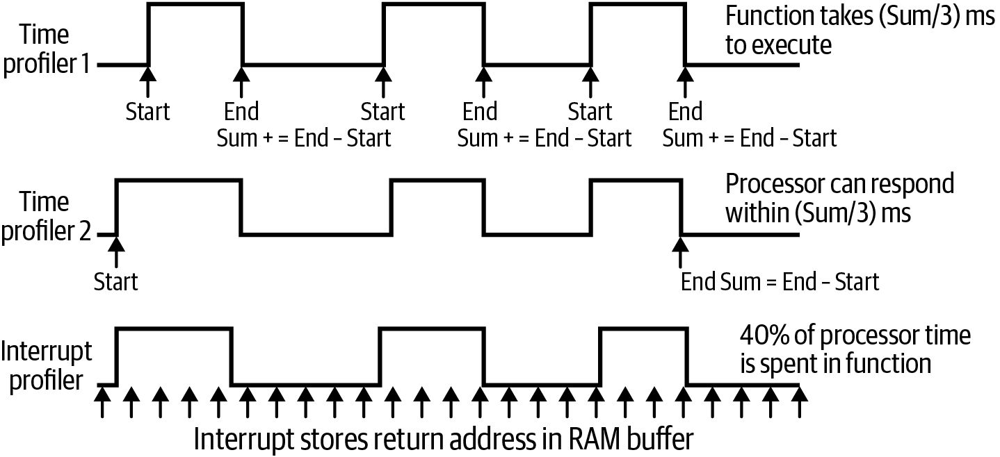

第14章 电机与运动
Making Embedded Systems — Elecia White 著 | AI 辅助翻译
电机与运动
我第一次让电机在我的软件控制下运动的那一刻，是我爱上嵌入式系统的时刻。这不仅仅是闪烁的灯光和感知环境那么简单。让我的代码改变世界，有一种神奇的感觉。 从那时起，我在试图重获那种快感的过程中引发了不少小火灾。如果你的硬件很好，软件也足够用心，也许你可以从我的发现中学习，而不是重蹈覆辙。
创造运动
执行器是你的软件用来对环境产生机械影响的部件。最简单的执行器是电磁阀（solenoid），它有点像反向的按钮。它是一个电磁铁，可以移动一块金属：如果你将它设为高电平，电磁阀处于一个位置；如果你设为低电平，电磁阀则处于另一个位置。它们对于锁定物体或开关阀门非常有用。 触觉反馈通常使用压电蜂鸣器或振动电机，作为用户界面的一部分（比如手机的振动模式）。虽然它们通常也是开关式的，但有时你可以用不同的频率驱动它们，以产生音乐音调和振动。（压电元件也可以用作扬声器，但那要复杂一些。） 然而，如果你使用的电机不仅仅是开关或发出嗡嗡声那么简单，那让物体动起来会更有趣。 无论你是在制造双足机器人，还是在传送带上移动一个小部件，电机都是系统真正在现实世界中发挥作用的地方。虽然电机非常精巧，你绝对应该尝试使用它们，但好的电机控制本身就需要一本书来讲解。我会列出一些要注意的事项，但我只能给你一个关于电机的简要介绍。 正如你可以通过使用数字传感器来购买更简单的实现方式一样， 一些电机组件包含一个电机控制芯片，该芯片会实现与电机类型兼容的控制算法。 控制器会为你的处理器提供简单的API，同时提高电机的精度和使用寿命。 电机有许多类型，你的选择会受到设备使用寿命、扭矩（旋转力）、能效和功耗等特性的影响。 步进电机（stepper motor）是一种流行的选择，不过它可能相对昂贵。步进电机可以精确定位并保持位置（高保持扭矩）。这些是最容易使用的电机，因为你可以在开环模式下运行，不需要任何反馈机制。由于步进电机有多个磁铁来转动电机轴，它们需要多个I/O线。每根I/O线被激励，使电机轴步进到下一个位置（这可能会引起一些抖动）。当你希望电机朝一个方向平稳运行时，你需要让I/O线按照其数据手册规定的复杂模式来"跳舞"（这种跳舞称为换向/commutation）。 在电机谱系的另一端是有刷直流电机（brushed DC motor）。它非常便宜，通常只需要一根I/O线（如果你希望它能反向转动，则需要两根）。电机的速度取决于施加的电压。你可以使用PWM来获得比"关闭"和"全速运转"这种二选一更多的控制。电机通常不喜欢以数字方式被猛然开关，因此使用PWM（以及一些相对简单的驱动电路）来给出更平滑的速度曲线，将延长电机寿命（我们在第4章中见过PWM控制）。直流电机的一个难点是将它们停在精确的位置；它们通常需要一个反馈控制系统来实现这一点。 有刷直流电机的扭矩取决于电流。但你的处理器可能只能提供驱动一个非常微弱的直流电机所需的电流，而且电流浪涌可能会损坏你的I/O线。所以这些I/O线会经过一些额外的电路来获得更强的驱动力。 无刷电机（brushless motor）通常具有更长的使用寿命，因为它没有步进电机的抖动，也没有任何接触部件（电刷）。与步进电机一样，它需要几根I/O线协同工作来实现旋转。与有刷直流电机一样，控制速度比控制位置更容易。无刷电机节能、安静，价格通常介于具有类似特性的步进电机和有刷直流电机之间。最后，无刷电机可以是直流电机，也可以使用交流电。直线电机（linear motor）类似于无刷电机，但它们是沿直线运动而不是转圈。它们也类似于电磁阀，但具有更精细的控制。 扬声器中的音圈就是无刷直流直线电机的一个例子。如果你手头有一个闲置的扬声器，试着把电池接到扬声器端子上，看看它在直流电下如何工作。（注意：根据扬声器和电池的不同，你可能会损坏扬声器，所以从小电压开始。） 还有一种非常重要的电机类型：舵机（servo motor）是包含控制器的步进电机或直流电机，该控制器用作内置的反馈机制。本质上，舵机不是电机，而是包含电机的小型系统。你可以购买舵机，但你也可能作为系统的一部分来构建一个舵机。
位置编码
关于电机系统，第二重要的事情是：你如何知道它到达了目的地？对于步进电机，你可以计算从当前位置到目标位置所需的步数。然而，你如何知道你从哪里开始呢？ 如果你的位置反馈方法能给出绝对位置，你就可以直接读取。然而，许多系统使用更便宜的位置传感器，它只能给出相对位置，因此你需要知道测量标尺的起点在哪里。 大多数电机（步进或其他类型）都有一个原点传感器（home sensor），用于指示电机行程中某个特定位置的绝对位置。通常原点在极限位置（例如，最左边或最底部），尽管有时原点位于行程的中心而不是边缘。寻找原点的过程是让电机缓慢地朝那个方向移动，直到检测到原点位置（有时使用光学传感器或接触开关）。如果原点位于极限位置，它就作为系统的零位置，其他位置都从那里开始计数。一旦电机到达原点位置，你就可以使用相对定位开始移动到一个位置。 在步进电机中，相对位置是根据电机步数计算的。对于任何其他类型的电机，你需要另一种称为编码器（encoder）的传感器。它通常是一个光学编码器，使用一系列交替的区域（黑/白、反光/哑光、不透明/透明），让你的软件可以将信号视为数字输入。 直线编码器（linear encoder）测量电机沿直线的位置，通常是增量式的，因此软件必须跟踪它相对于原点位置的位置。 旋转编码器（rotary encoder）测量电机轴的角度。随着位置精度要求的提高，这些编码器可能变得很复杂。旋转编码器通常有多圈交替图案。例如，三圈将需要三个传感器，分别连接到三个GPIO。在你的代码中，你将获得三位数据，让你知道电机处于八个（2³）位置中的哪一个，测量精度为八分之一圈，这精度不算高。但如果你的电机每转一圈移动1毫米，这可能就足够了。

图 14-1 — 展示了一个简单的电机系统，其中一些PWM控制线连接到电机。当电机旋转时，编码器随之旋转（虚线表示包含齿轮等部件的机械黑盒）。光学传感器检测编码器上的黑色和白色区域。传感器连接到处理器上的计数器，并测量相对位置。
最初，电机执行其回原点程序，沿一个方向移动，直到检测到原点传感器上的目标边沿。到达原点后，软件可以开始使用编码器计算位置变化。你的处理器可能有一个功能可以执行这种计数；请查阅用户手册中的"计数器/定时器"部分。
图 14-1 — 电机和编码器系统。
用PWM驱动简单的直流电机
对于直流电机，速度与你提供的电压成正比。它们通常由PWM控制，如图14-1所示。PWM的占空比越高，平均电压越高，电机转得越快。 然而，驱动PWM的处理器GPIO永远不会直接连接到电机。电机需要的电流比处理器I/O线能提供的要大得多。相反，GPIO的PWM输出经过一个晶体管¹，该晶体管从一个更高电流的电源上开关电压。最简单的理解方式是，它们就像自动门：当你的代码使用I/O引脚"按下"FET时，它就打开了电机和电源之间的通路。如果你不这样做，你的处理器引脚（或整个处理器）很可能会损坏，可能会释放出"魔法烟雾"。 如果你想让电机反转，你需要使电压为负。这通常涉及一个H桥（H-bridge），它是一个电路或电机驱动芯片的一部分，允许电压为正或为负，从而使电机可以正转或反转。 电压控制电机的速度，而电流控制扭矩（旋转力）。从静止状态启动对直流电机来说很困难；它想保持原状。因此，启动需要相当大的电流才能进入运动状态（直流电机像沙发土豆一样懒）。因此，无论是加速还是对抗反作用力，产生扭矩都需要大量的电流。 如第13章所述，电流在系统中是可加的。如果你有一个运行时消耗3mA的处理器和一个消耗2A的电机，你的系统至少需要2.003A。在带有电机的低功耗系统中，电机通常是最大的功耗源。 电机吸收（sink）大量电流：它们需要电流来运动。大多数系统将微处理器和电机的电源分开，以避免问题。注意，当电机开始运动时，它们要克服惯性，这意味着可能会有一个突然的电流冲击。这种浪涌电流（inrush current）可能会导致很多问题，包括降低系统电压（这可能导致处理器复位）。电池供电的系统特别容易受到这个问题的影响，因为在低电量时的可用电流可能与满电时不一样。 串联电池可提供更高的电压；并联电池可提供更大的电流。 那么你需要多少电流？如果你有电机数据手册，请阅读它。对于简单的直流电机，你可以使用在"测量功耗"（第357页）中学到的工具：本质上，用你的电源测量电机的电流消耗。这可能不会给出浪涌电流的精确值，但可以让你了解预期的电流量级。 一种找出电机最大电流的方法是使其堵转（迫使它停止转动），不过这对电机不好，所以不要经常这样做。
加加速度、加加加速度、加加加加速度、加加加加加速度
首先，我们需要一些运动方程：
距离 = 速度 × 时间
速度 = 加速度 × 时间
反过来就是：
速度 = 距离 / 时间
加速度 = 速度 / 时间
然后我们可以说出一些听起来很聪明的说法，比如速度是位移（距离）的导数，加速度是速度的导数。这仅仅意味着速度是距离随时间的变化率；加速度是速度（随时间）的变化率。
扭矩则不同；它与旋转和力相关，其中力与牛顿定律相同：
力 = 质量 × 加速度
我把扭矩理解为"驱动力"：电机克服阻力旋转的能力。这个阻力可能是我用手握住电机不让它转，或者是一个被卡住的齿轮。低扭矩电机会在原地不动（发热，可能发出声音）；高扭矩电机则会从我手中挣脱，或者压碎卡住的齿轮。 由于扭矩与质量和加速度都相关，高扭矩电机也可以更快速地改变速度，并移动更大的质量。 不管怎样，我不想谈论扭矩。我想提一下，加速度的导数是加加速度（jerk）。这个名字很贴切：加速度发生快速变化的电机会导致急动。这也会引起振动，并给电机带来额外的磨损。通过平滑地改变加速度可以减少加加速度。 加加速度的导数是加加加速度（snap）。加加加速度的导数是加加加加速度（crackle）。加加加加速度的导数是加加加加加速度（pop）。你不需要知道这些来做电机相关工作（或者如果你需要知道，那你的电机经验已经超出了我的范围）。但这不是很酷吗？
电机控制
在前馈控制（又称开环控制）中，你利用电机预期的工作方式来告诉它去哪里。例如，对于步进电机，你可以告诉它走100步，它就会走100步。它们的步长是已知的，所以你完全有理由相信你知道自己在哪里。 在反馈控制（又称闭环控制）中，你使用传感器来测量电机正在做什么，根据测量结果改变发送给电机的指令（或电压）。然而，这并不像告诉它一直走到某个位置然后叫它停下那么简单。到那时，电机已经超过了该位置。你可以告诉它回去，但这样你又会再次超调。除非你是想摇婴儿，否则你不会希望这样来来回回地晃。
PID控制
处理这个问题最常用的方法是使用PID控制。PID代表比例（proportional）、积分（integral）和微分（derivative）。每一项处理问题的一个部分，它们共同可以告诉你应该向电机发送多少功率（通常以PWM电平表示）。该过程从一个误差测量开始，这个误差就是电机当前位置（过程值，PV）与你期望它到达的位置（设定点，SP）之间的位置差。
比例项很容易理解。它只是一个常数乘以位置误差：
error = goalPosition – currentPosition; PID.proportionalTerm = PID.proportionalConstant * error; 因此，当电机离目标很远时，你的软件给它很强的驱动力；而当接近目标时，就降低功率。有时这就够了。然而，在离目标很远时就全功率启动电机会导致急动，这对电机不好。此外，你仍然可能超过目标，导致在目标位置附近振荡。或者，如果你的误差很小，比例项永远不会给电机足够的功率来实际移动，结果你就困在了不太正确的位置上（稳态误差）。
积分项通过将误差随时间累加来帮助解决这些问题：
PID.integralSum += error; PID.integralTerm = PID.integralConstant * PID.integralSum; 积分项不仅与误差量成正比（与比例项一样），它还考虑了误差持续了多长时间。当电机刚被指令移动后，误差只存在了很短的时间。但经过几个PID控制循环周期后，如果电机尚未接近目标，积分项就会提供额外的驱动力，加速向目标前进。然而，它有点像动量。一旦积分项开始发力，它往往会导致超调，甚至比单独使用比例项更严重。虽然控制器最终会返回到目标位置——得益于积分项，没有振荡或恒定误差——但最好还是不要超过目标。这就是微分项发挥作用的地方： PID.derivativeTerm = PID.derivativeConstant * (error – previousError); 这使得控制器在误差减小时减小输出。这增加了一些"摩擦力"来平衡比例项和积分项，通常在误差项变小时抵消PI项的作用。 PID控制器的输出是这三项之和。这个输出随后进入电机驱动代码，将其转换为PWM占空比。

图 14-2 — 展示了系统被指令到达一个设定点（位置）时，各项及其输出之间经过良好调参的交互。注意，系统的输出反馈到控制器中，所以这是一个反馈系统。因此，它可能不稳定。过多的比例控制可能使电机振荡（或振铃）。过多的积分控制可能导致电机在超过位置时把自己撞得粉碎。
图 14-2 — 设定点变化时的PID响应，例如电机被指令到达一个新位置。输出信号进入电机驱动器（将其除以2后作为PWM占空比输出）。
误差信号通常是带噪声的。如果噪声太大，微分项可能导致随机结果。失控的反馈系统可能会做出危险的事情。 考虑在你的设计中加入限位开关。像原点传感器一样，限位开关可以识别绝对位置，不过它们通常安装在电机可能发生故障或变得无法控制的位置。 然而，有许多许多工程问题都可以用PID控制器给出一个很好的解决方案。我在电机、加热器和弹簧系统建模中都使用过PID。这种控制方法被广泛使用且理解深入；可以将其视为一种工程设计模式。而且你可以从之前的代码片段中看到，在软件中实现一个PID控制器很简单。 但是，那些常数呢？那些描述每个PID项对输出贡献多少权重的常数？弄清楚这些常数是一个痛苦的过程，称为调参（tuning）。该领域确实提供了一些简单的指导原则：从比例控制开始，直到它工作得相当好，然后加入微分控制来平滑超调，然后（如果需要的话）加入积分控制来避免小误差。但在项目本来应该结束三周之后，你可能还在咒骂那个给你这个建议的人，告诉你去不断微调参数直到电机工作。 还有一些数学工具可以帮助你进行调参（例如Ziegler-Nichols方法）。尽管数学上很繁琐，而且不得不估算一些输入（现实世界与数学理想不完全匹配），我建议除了试错法之外也使用这些方法。但这些方法通常需要对问题进行形式化和深入的理解。 注意，PID的概念是相当标准的，但实现方式各不相同。例如，由于微分项对误差信号中的噪声敏感，许多实现会使用多个采样点的误差平均值。这使微分项对噪声引起的混乱行为有更强的抵抗力，但会使其对系统的响应变慢。有许多类似的小调整来确保更好的性能并处理系统特定的问题。 到此为止，我已经给了你足够的信息让你变得"危险"，但不足以让你做好工作。第387页的"延伸阅读"推荐了一些资源，帮助你实现和调参PID控制器（以及其他一些控制方法）。
运动曲线
你希望你的电机如何运动？忘掉那些PID的东西，想象你坐在一辆微型车里，驾驶着那个电机。你的油门和刹车踩得猛吗？先猛加速到一半路程，然后猛减速？ 这种类型的运动称为三角形运动曲线（triangular motion profile）。见图14-3。你会以最快的速度到达目标，但这对电机好吗？对乘客呢？

图 14-3 — 最大加速然后最大减速会让你最快到达，但对零部件冲击很大。
所以另一种选择是考虑稍微温和一些的方案：梯形运动（trapezoidal motion）。在图14-4中，可以看到到达同一点需要更长的时间，但电机不必从全正向加速度猛跳到全负向加速度。（记住，加加速度是加速度的导数：它表现为电机上的急动或振动。）

图 14-4 — 在梯形运动曲线中，系统加速到一个合理的速度，稍晚一些到达目标位置。
请注意，由于速度与输入电压相关，即使有位置反馈，控制速度通常也比控制位置更容易。在编写运动曲线代码时，你通常需要从速度（电压）和时间两个方面来考虑目标位置。这就是为什么三角形和梯形运动曲线描述的是速度曲线的形状，而不是位置曲线。 许多处理器供应商会提供一个针对你的处理器特性进行过调优的电机控制库。请查看他们的应用笔记。这些库可能会为你做数学运算，这样你就可以进行点到点的位置移动，而不必担心速度和加速度。 一个更好的曲线会进一步平滑加速度，将加加速度减小到无关紧要的程度。这通常称为S曲线（S-curve），如图14-5所示。

图 14-5 — S形运动曲线减少了急动，从而实现更平滑的运动。
S形运动曲线比三角形曲线花费更长的时间，但根据电机的最大速度目标，它可以比梯形曲线更快。
我讨厌电机的十件事
我热爱电机。它们能做这么多事情：电机可以关上一扇门，或者让机器人移动。电机可以将液体泵入DNA扫描仪，或者在电动自行车中提供助力。应用场景无穷无尽，令人着迷。
但电机也有一些让我讨厌的地方：
**舵机甚至不是一种电机类型**（除非是业余舵机/hobby servo）。 与直流电机、无刷直流电机或步进电机不同，舵机只是任何带有位置反馈的电机系统。没有标准化。例外的是业余舵机（或称RC舵机），它们有两根电源线和一根控制线。它们使用电位器对电机进行简单的反馈控制。
**电机可能导致处理器复位。**
如果电机电源与处理器电源连接在一起，电机的运动可能导致处理器电压下降，造成欠压。这可能导致复位或涉及硬件故障的异常行为。 处理器的电源需要与电机电源隔离，并在两者之间进行大量去耦（去耦通常意味着大量的电容器）。你还必须使用MOSFET或其他晶体管电路来保护处理器上的GPIO免受电机吸收的电流以及启动电机可能引起的瞬态影响。
**电机不节能。**
一个有200个5mA LED的系统大约需要1A的功率，而这可能只是一个单独的小电机所需的功率。当你使用电机时，你的功耗预算可能大部分都被电机消耗掉了。
**电机及其驱动芯片会发热。**
所有这些功率都必须有个去处，但并不是所有的功率都转化为运动。很多功率进入了驱动芯片（它们可能变得极热，以至于自己脱焊，不过这通常表明电路设计存在问题）。不完美的换向可能导致很多问题，但卡住和堵转也会导致问题。
**电机会损坏东西。**
根据你使用的齿轮装置，你的电机可能太快或太有力，以至于当你不小心发送了不该发送的指令（哎呀，没检查PWM为负值？），突然之间，零件就飞得满屋子都是。电机没有用于人类安全的紧急停止装置（直到我们去开发它们）。
**电机在启动时、保持位置时，或者发现一粒灰尘玩耍时，可能消耗过大电流。**
直流电机在启动和堵转时消耗大量电流。步进电机在静止时（保持位置）消耗大量电流。 通常的经验法则是，电源需要提供和吸收正常满载最大电流的三倍。许多电源根本不能吸收电流。 例如，将直流电机直接连接到一个线性稳压器上。电机开启正常，但关闭时，稳压器无法吸收来自负载的回流。这就是为什么要有一个续流二极管（snubber diode）将反向电流引导到远离稳压器的安全位置。没有续流二极管，反向电流将导致电压尖峰。（H桥是解决这个问题的更高级方法。） **电刷有噪声的直流电机会以每秒多次的频率自行开关**，因为电刷与电枢间歇性接触。所以这不是只在停止时发生的现象；它一直在发生。
**电机会着火。**
硬件要花钱。组装需要时间。小的编码问题可能导致昂贵和危险的后果。（好吧，往往也是搞笑的后果，但这不应该出现在我为什么讨厌电机的清单里。）向你的电子工程师承认，你又烧了一个FET，因为你试图在没有禁用调试UART中断的情况下控制电机，这个嘛，我也经历过，我理解你的感受。 从最底层开始，打好坚实的基础，然后再尝试做花哨的运动曲线。
**电机控制可以简单到微不足道，也可以困难到几乎不可能。**
电机控制是一个完整的研究领域。如果你幸运的话，你可以买到一个好的舵机，它带有支持任何必要运动的电源电路，能够按照指令到达指定位置。如果你不那么幸运的话，那么换向可能会产生非常漂亮的示波器波形，因为你试图弄清楚为什么它不太对劲，而FET却在不断烧毁。 **尖刻的二极管、势利的二极管、续流二极管、反激二极管、瞬态抑制二极管（TSD）、直通电流——实际上，整个模拟电子学。** 电机是使用功率来旋转的，对吧？当它们停止时会发生什么？功率不会突然消失；电机在猛停时会将少量功率返回给电路。这对电路不利，所以电子工程师加入续流或反激二极管来防止损坏。注意：如果你有一个双向运动的电机并且使用H桥，H桥已经内置了续流二极管。 说实话，电子学中没有什么东西真的像我们假装的那样瞬间发生或干净利落，而电机系统往往会粉碎这些幻想。FET需要时间才能导通。当你有多个FET时（比如H桥中的那些），有时它们需要时间才能切换状态，这可能导致它们发生"撬棍效应"（crowbar）——卡在坏的状态，通常是电源短路到地，终结你的设备的世界。
**以上只有五条会与你的电机子系统相关。**
"电机"这个词就像"传感器"这个词。不同类型之间当然有相似之处，但同样也有很多差异。仅仅说"电机"并不足以知道它会对系统产生什么样的影响。电机由不同的机制驱动（PWM、通信、执行PWM或换向的驱动芯片）。位置反馈有多种形式。 选择电机取决于你的应用。你需要明确扭矩、速度、精度、精确度、成本、寿命和控制机制的目标。 好消息是你有很多选择。坏消息也是你有很多选择。
延伸阅读
Adafruit有一个电机选择指南，给出了每种类型的优缺点，并提供了许多关于运行每种电机的更具体教程。 控制理论不适合胆小的人。然而，这是一个孩子们正在学习的领域，因为他们需要它参加FIRST Robotics竞赛。所以，与其推荐我通常会建议的那些严谨且数学繁重的巨著，我鼓励你看看以下资源： • CTRL ALT FTC是一个完整的FIRST Tech Challenge控制理论课程。它包括代码、图表、视频和练习。从基本的开关控制开始，逐步深入到PID控制器、运动曲线和更高级的主题。 • WPILib的"Advanced Controls"文档描述了它的库如何工作，这很好，但重要的信息是所有这些是如何协同工作的，而这正是你可以在你的系统上使用的东西。 对于更偏向书本方式的电机控制和其他控制方案，我喜欢Ken Dutton、Steve Thompson和Bill Barraclough合著的《The Art of Control Engineering》（Addison-Wesley出版）。它比必要的多了一些数学内容，但对于实际实现仍然相当有用。 许多处理器供应商的应用笔记包含了关于使用他们的产品来控制电机的信息。这些可能描述了已经为你编写好的库，或提供了理论。有关来自各供应商的更多信息，请参见本书的GitHub仓库。
面试题：教教我
H桥是如何工作的？ 我在一家我很想去的公司经历了一次糟糕的面试。我非常适合那份工作，我和那位资深电子工程师一见如故。然后进来了一位初级电子工程师，她问我关于现代C++语言特性方面的问题（我确信他们嵌入式编译器并不支持那些特性）。 她非常初级（在我看来，对那位电子工程师来说，对整个行业来说都是如此）。在为可能是第一次担任面试官做准备时，她在互联网上查找了问题，详细了解了C++的要点。但她并不理解它们。她只知道我没有给出互联网想要的那个答案。而她的电子工程师就在那里，看着我并点着头（不是对她点头）。当我基本上在她老板面前轻视她的问题时，她感到越来越沮丧。 这里有两个教训。 第一，不要学我；我没能得到那份工作，因为我对她太刻薄了。我应该帮助她理解她的问题并不相关，也许为她的下一次面试建议不同的问题。作为资深工程师，你的职责是帮助初级工程师。 第二，如果你是面试官，而你对面试的职位没有领域知识，不要假装你懂。我已经证明了我具备这份工作的技术能力，她应该寻找的是我们能否一起共事。 有趣的是，仅仅几个月后，我就开始面试电子工程师候选人了。除了基本电子学，我不知道该问什么，以便在他们答错时能够引导他们。我最终问了关于H桥的问题，因为我对这个电路的理解从来不会超过两周。重要的是候选人能够向我解释清楚，而不让我觉得自己很蠢。面试结束后，我可以去查答案，确认互联网认可这个解释，并与我的新理解一致。 本质上，我利用自己的无知来帮助我找到可以学习的人，而不是希望我能假装成专家。 致那位后来很可能会拥有辉煌职业生涯的初级电子工程师，感谢你帮助我认识到，作为面试官，我的目标之一是识别我愿意（和不愿意）与之共事的人。我仍然非常、非常抱歉让你哭了。 ---